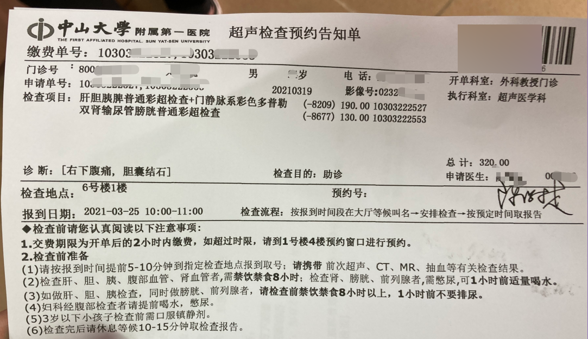
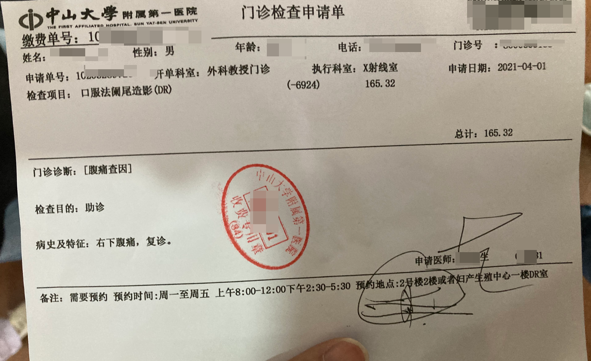
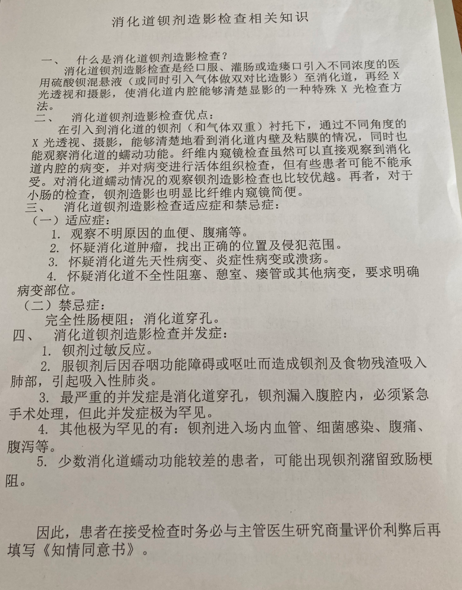
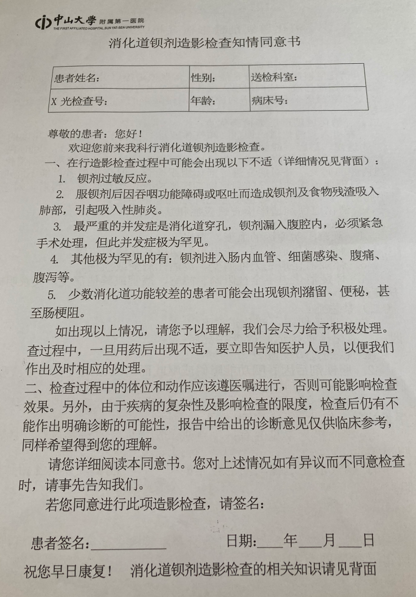
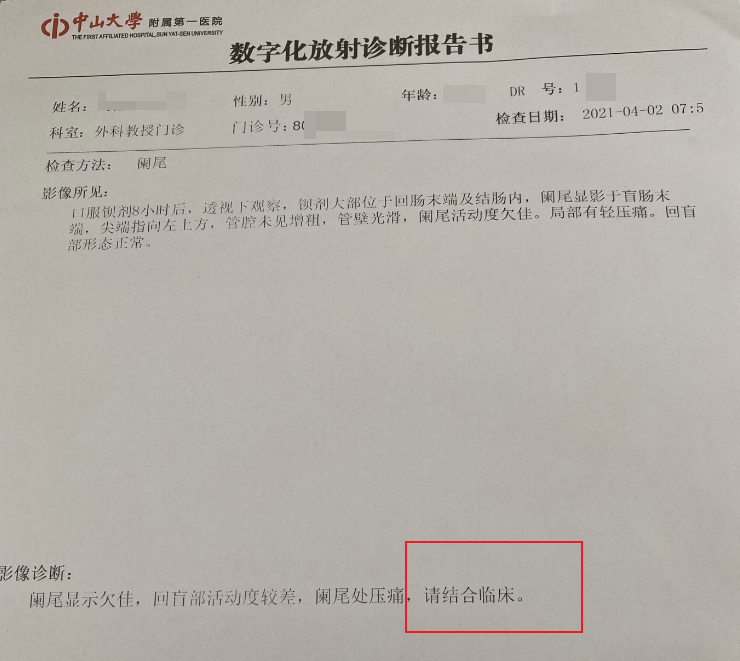
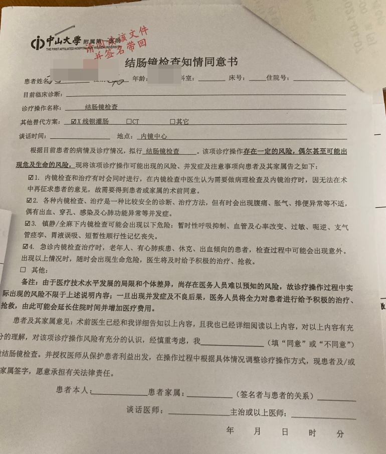
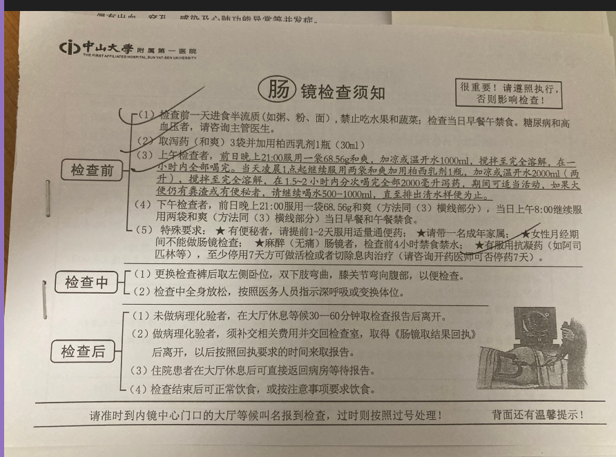
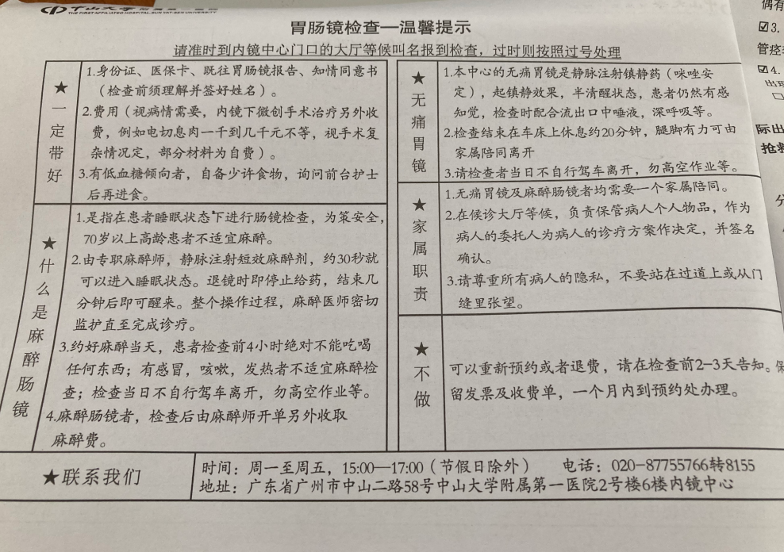
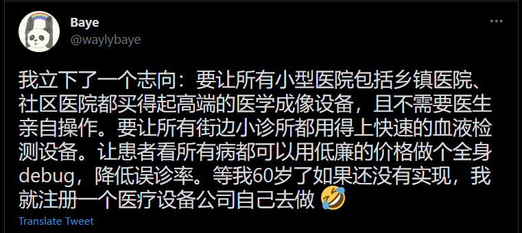

经过
刚开始的一周，右下腹隐隐作痛，自己并没有当回事。到了第二周，疼痛还在继续，终于意识到不对劲，我就开始慌了。
第一次挂号 & 检查
于是我想起以前去体检的时候，检查出胆内有结石。于是马上挂了个肝胆外科的号（03-19）。问诊当天，我拿我以前的体检的彩超报告给医生看。但是看不出什么问题（坑 1-1）。然后开了一张单让我再去做一次彩超，说是医院外边的体检中心报告不行。如下是医生打的彩超体检单。
做彩超的时间是 03-25（坑 1-2）。做完彩超做完后，等 1 个小时就可以拿到纸质报告。帮我检查的是一个刚工作的医生（女生），说右下腹是阑尾的地方，并不是胆（教训）。说阑尾炎最好还是做 CT 效果更好，做超声检查不出问题（坑 2-1）。检查结果和我在体检中心的结果差不多，但是详细了一点。因为彩超检查不出问题，我又已经等了一周，肯定不想继续拖延下去，于是就有了下面去做 CT 的事情。
第二次检查
做 CT 不是在医院的，彩超都要等一个星期，我不想继续干等下去。就去了一家私人医学影像诊断中心（要有门路）。不得不说，这效率是真的高，下午预约，5点就能做（03-25）。而且人不多，服务比医院不要好太多！但是，费用会比医院贵一点，做一个螺旋 CT 平扫 500 人民币。而且，这里并没有专业医生给你建议，只有一个引导员（坑 3-1）。你只能凭你在医院医生的建议或自己的直觉来决定你自己要做什么检查。对了，这个影像中心前台清一色 iMac。检查完，等半个小时，就能拿胶片。但是结果要明天才出。
下面是检查的结果，注意 请结合临床。在报告出现这些字眼，可以说这个报告没检查出什么问题。是该松一口气，还是为下面还要继续检查叹气？
在这期间，开始吃一些抗生素（阿莫西林），但是没见效果。
第二次 & 第三次挂号
CT 结果出来，可是中山一医那边挂不到号。于是，我换了一家比较小的医院，挂了消化内科门诊（03-27）。把最近的检查都给医生看，也没得出什么结果，继续让我口服抗生素，换了头孢克肟。
其实到这里，我就应该转换一下思路，或许不是什么大问题，也许不是阑尾有问题，而是其他地方。但是我这个一根筋，害。。。
把医生开的药吃完后，疼痛还在继续，而且更疼了。没办法，又挂了一个号（03-31）。这回这个医生检查就比较仔细，但是看报告也不能确定什么问题。在他的问答之下，我才发现我一直排便是不正常的，黑色。医生说可能是血便（教训）。于是建议我住院，然后做肠镜和胃镜。到这里，我已经怀疑是不是肿瘤问题了。当时医院快要下班了（一般 5 点半），医生让我快点，不然可能这星期安排不上检查。我匆匆交完做核酸的费用，做完核酸检测后，准备办理入院。谁知，要缴纳按金 2000 多，还不支持支付宝等。需要银行卡转账。当时身边只有医保卡。无奈只得作罢。
第四次挂号
在入院做肠胃镜失败后，我在中山医挂到号了（04-01）。这个医生一边喝咖啡，就看了几下我的报告，也没多问啥，又开了一张检查单，这回是 x 射线检查。这回不会像彩超那样要等很久了，明天就可以做检查
这个是检查单

在做这个之前，需要先服用钡餐。其主要成分是硫酸钡。开药的人告诉我和水按照一比一的比例混合，服用半包（250g）。喝起来有点水果味，也不是很难喝。
下面是一些做钡剂照影的知识和免责声明：
 检查做完检查第二天就可以拿报告
又是 请结合临床。奔溃
第五次挂号
到这里，我已经被折腾很累了。在 04-02 刚好挂到一个号，但是同样以前的那些报告医生说没用！需要再重新检查。这个医生也怀疑是肿瘤，说我前面做的 CT 平扫是检查不出肿瘤的，如果做的是增强就可以。 然后给我开了个肠镜的检查的单，让我去预约。也开了一点药。
  尾声
这次的检查比较戏剧性，因为检查也要等几天。这几天内，老家寄了一些草药还有肠炎药（肠炎宁，整肠生，诺氟沙星胶囊），吃完排便症状有些改善。自己紧张的心情也有所缓解。于是冷静想了下，去买了一些阿本达唑。这个是治肠道寄生虫的，我要把这个因素也排除。吃了一阵，但是疼痛还在继续。这个期间，因为一些原因，我推迟了肠镜的检查，一方面是情况有所好转，另一方面，是肠镜检查有点麻烦，所以打算找个机会跟胃镜一起做了。我清楚自己的消化道是有点问题的，但是一直没有重视去检查。
讽刺的是，后来这个疼痛的问题我自己找到了。一次洗澡时候，去搓后背，发现 尾椎 那里有些疼痛。按下去，很酸痛。到此，我确定问题并不是右下腹，肠道发炎估计在吃完那些药之后，应该是缓解了，而是后背尾椎。难怪这个疼痛的位置一直捉摸不定。
最近几天，开始贴膏药了。虽然且消化道还是有点问题，但是没有以前那么严重，只能慢慢调节了。
吐槽
各种坑：
一般医生每天要接上百个号，不可能有那么多时间耐性给你仔细检查。本人内向加上对自己身体认识匮乏，对一些问题，比如什么程度算疼？哪里疼？可能都不能准确回答。这些因素就导致医生不能准确诊断
我下腹疼了两个星期，还要让我等 6 天才能做检查。可见医疗资源紧张。这个也怪我本人当初太天真，定了一个热门医院的点。我试图去让医院的人帮我调整体检的时间，但是给出的答案：医生帮你安排的就是最早的时间。这里要指出一点：医生只帮你问诊，给出建议。有些事情（比如彩超检查的时间）是后台系统帮你安排的，这个你回去找医生也没用，或许你加钱走急诊通道能搞定？
到这里，可见门诊的医生和检查的医生建议是不一样的。一个彩超，一个 CT。而且，在做彩超时，这个检查医生很多都是不确定的，经常要问身边另一个医生（是她的师姐）。我的理解是，门诊的医生要排除右下腹其他器官的问题，但是我体检的报告该有的都有了，为什么还要我再检查一遍，是信不过外边私人机构的检查？
在不清楚状况下，自己随便做检查。劳财伤身。比如 CT 有平扫和增强之分，你知道哪个适合你吗。我当时是不知道的。
后来才了解到，阑尾炎也有急性和慢性之分。
这个中间有个小插曲。因为医院预约不到号，我想先去社区医院开点药先缓解一下。我拿着超声和 CT 的检查报告给医生看，他直接叫我去大医院看。连进一步的诊断都没有，就把我打发走了。估计看我拿了一堆报告，以为是大病，他搞不定吧。
教训：
- 只能怪自己无知，连胆的位置都不清楚。以前中学学习生物课程的热情随着人的成长，都被磨没了吧！知识都还老师了
- 又一次认识到自己的无知。对自己身体的认知真的很缺乏。
总结
定点不要选择一些热门的医院。年轻人还年轻，一般不会出现什么大问题，大定点选择一个离自己比较近的三甲医院就行。像中山医这种专业性强，里面的医生平时接诊的都是重病的患者，小病也会被当成大病来对待诊断。试想一个普通的肠炎，被上升到阑尾炎，肿瘤的程度，能不吓人吗
医院里的医生，平时工作的强度大，生死离别可能也看多了，一般都是比较冷漠的，你要自己多问几句，不然辛辛苦苦等上的号，可能就一分钟的对话就结束了。
对自己的身体要有一定的认知，不要哪里痛，痛的是什么位置都不知道就去医院问诊，这样医生都帮不了你
如果身体出了问题，一定要引起重视。但是重视不意味着慌忙跑医院。看病要从小到大的顺序来。先自己预估问题所在，能在药店买点药解决，就先试试。不行先到社区医院，然后再到大医院。一有异样就跑大医院，浪费医疗资源不说，自己还费钱费力。
不要太相信医生。有时候受限于自己的表达，或医生的经验，极有可能误诊。要减低误诊的概率，你可以在不同医院，挂两三个号，多问一些医生。然后自己进行判断
不要在自己不了解某项检查的作用的情况下，冒然去做检查。即使医生建议，你也应该要去了解一下该项检查的作用。
身体出现问题，可以告知家人朋友，让他们帮你出主意。有时候经验比检查有用
以前我是一个坚定的西医支持者，经过怎么一轮折腾下来，我也能理解为什么有些人会选择中医进行治疗。有些病，有时候挖根掘底想要找出问题所在，是不可能的。中国的医疗已经不是匮乏能形容的。看个病，你得先挂号，能不能挂到号是一回事。号挂到了，医生检查询问一下，开出一张检查单，让你去检查。什么时候能安排检查还得看运气。检查结果出了，又得挂个号，再去问医生。。。。。。这一套操作下来，能不累吗
以前看到医生抗议罢工，我是支持的。那是我没有站在患者的角度来考虑。如果真得了病，又没有医生救援，真的不是滋味。周末医院不接诊，从效益来说，真的很浪费。 一个什么样的系统，就会孕育出什么样的人
平时多注意自己的身体。这次爆发的原因估计就是下午经常点外卖，然后吃了不卫生的。吃完就躺在椅子上午休。久坐是肠道的敌人，顺带压迫到了脊椎，才造成了这次的灾难。
其他
被医疗问题困扰的，绝对不止我一个

Twitter link
收款单，可以看到医保的扣费情况